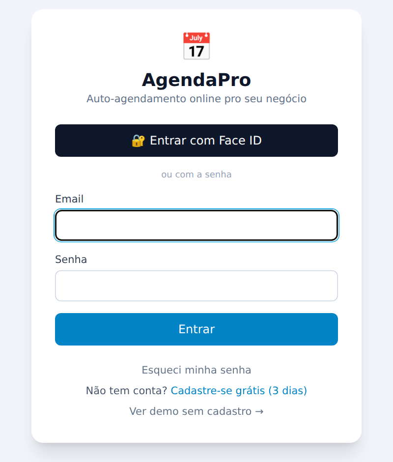
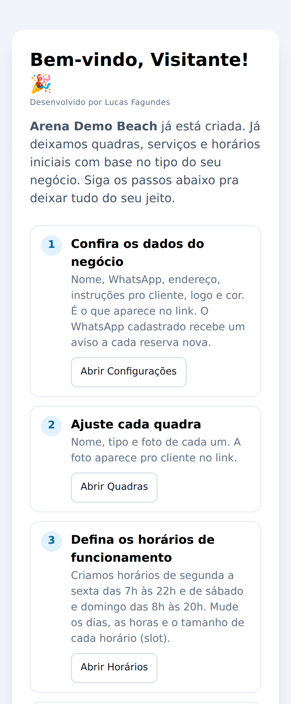
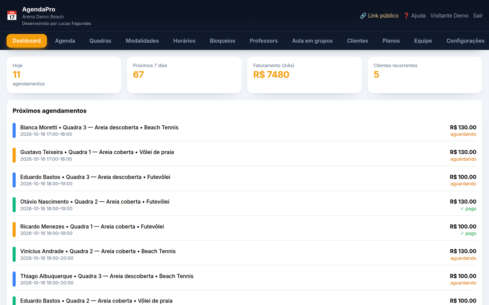
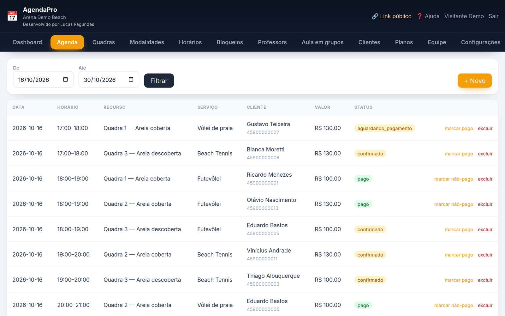
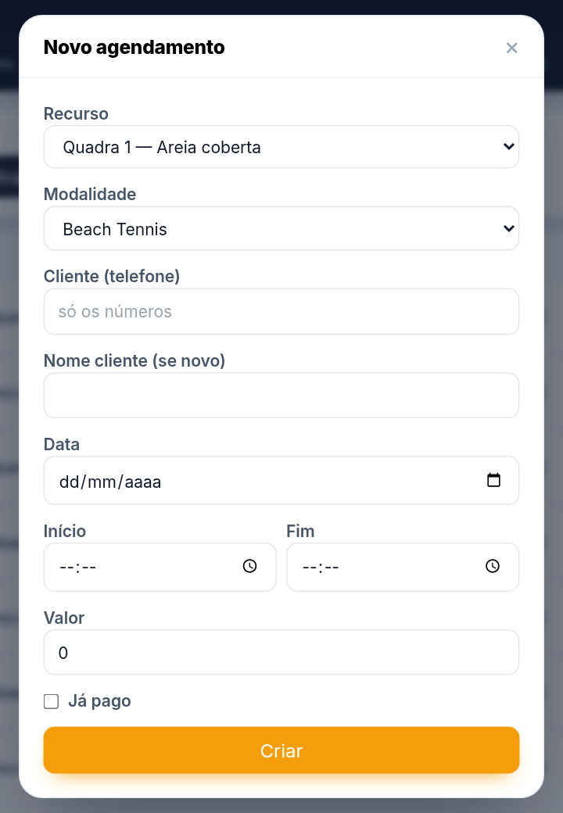
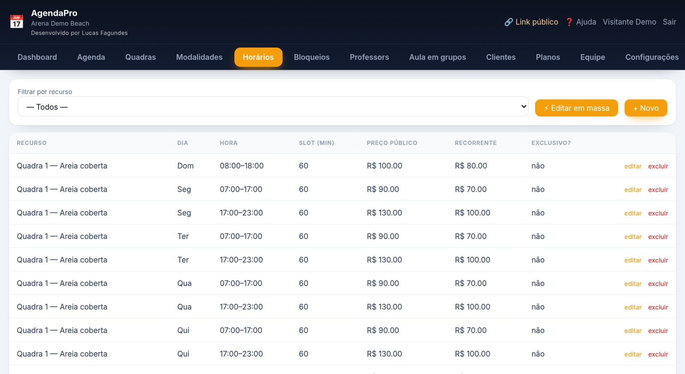
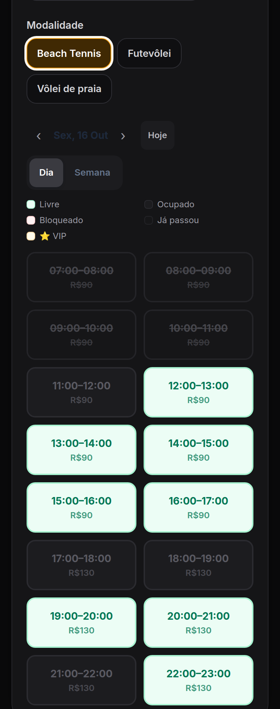
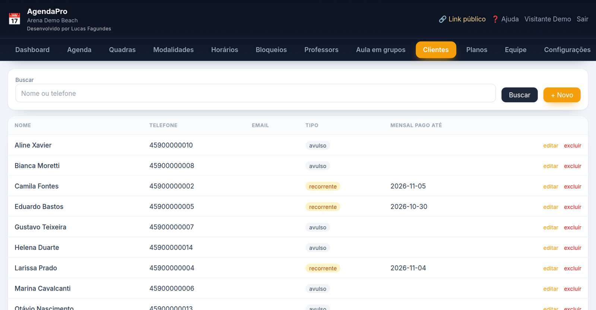

Do primeiro acesso até o link de agendamento no ar: o que cada aba faz, a ordem de configurar e as dúvidas mais comuns.
No navegador do celular ou do computador: agendapro.luqsys.com.br
É o e-mail que você usou no cadastro (ou o que o administrador do seu negócio criou pra você).
Toque em Esqueci minha senha na tela de entrada: abre o WhatsApp do suporte e a gente libera uma nova.
Aba Equipe → Editar na linha com o seu nome → campo Senha → Salvar. A aba Equipe aparece pra quem é Admin; nos outros perfis, o administrador troca.
Depois de entrar, toque no 🔐 no topo pra ativar o Face ID neste aparelho. Pra ter o ícone na tela inicial, abra agendapro.luqsys.com.br/instalar no celular e siga o passo a passo do iPhone ou do Android.

No primeiro acesso o sistema abre a tela de boas-vindas. Os recursos, os serviços e os horários iniciais já vêm criados conforme o tipo do seu negócio. São 7 passos:
Nome, WhatsApp, endereço, instruções pro cliente, logo e cor. O WhatsApp cadastrado recebe um aviso a cada reserva nova.
Nome, tipo e foto de cada quadra, cadeira, box ou sala. A foto aparece no link.
Já vêm de segunda a sexta das 7h às 22h e de sábado e domingo das 8h às 20h.
Nos serviços (duração e preço). Na arena, o preço fica em cada horário da quadra, que começa zerado.
Copie e mande no WhatsApp, na bio do Instagram e no site.
Um login pra cada pessoa (aba Equipe).
Ícone na tela inicial, igual aplicativo.
Cada passo tem um botão que abre a aba certa. No fim, toque em Tudo certo, ir pro painel →. Dá pra rever esses passos pela Ajuda.

Quantos agendamentos tem hoje e nos próximos 7 dias, o faturamento do mês (a soma dos agendamentos do dia 1º até hoje, sem os cancelados, pagos ou não), quantos clientes recorrentes você tem e a lista dos próximos horários, com ✓ pago ou aguardando.


O sistema não deixa marcar dois clientes no mesmo recurso e horário, nem em horário bloqueado.
| confirmado | Reserva garantida. |
| aguardando_pagamento | O cliente escolheu pagar antes. O horário fica segurado por 15 minutos; se ele não concluir, vira expirado e o horário volta a ficar livre. |
| pago | Confirmado e pago. |
| cancelado | O cliente cancelou pelo link. |

| Recursos | Quadras, cadeiras, boxes, salas: nome, tipo, foto (aparece no link), cor e ativo. Recurso desativado some do link. |
| Horários | Cada linha é uma janela de um recurso num dia da semana. Slot (min) é o tamanho de cada horário. Preço público é o do cliente comum e preço recorrente o do mensalista. Exclusivo: só clientes recorrentes veem. |
| ⚡ Editar em massa | Muda o preço público, o recorrente ou o slot de vários horários de uma vez, filtrando por recurso e dia. Campo em branco não muda nada. |
| Bloqueios | Feriado ou manutenção: recurso (vazio = todos), data, início e fim (vazio = dia todo) e motivo. |
| Antecedência mínima | Em Configurações: quantas horas antes o cliente precisa reservar pelo link (0 = sem regra). Pelo sistema você continua encaixando. |
| Serviços | Nome, descrição, duração e preço. No link, o cliente escolhe o serviço e paga o preço dele. Na arena, a modalidade é só o nome: preço e duração vêm do horário da quadra. |

Pra mudar o endereço do link: Configurações → Link público. O link antigo deixa de funcionar.
Na arena e no personal/estúdio tem também aulas em grupo com vagas: o cliente se inscreve por uma aba própria do link.

Quem agenda pelo link é cadastrado sozinho, pelo WhatsApp. Na aba Clientes você busca por nome ou telefone, edita e cria na mão.

| Recorrente / VIP | Edite o cliente e mude o Tipo pra Recorrente / VIP. Em Mensalidade paga até, coloque até quando ele está em dia. No link ele aparece como ⭐ Cliente VIP, vê os horários exclusivos e paga o preço recorrente. Passou da data, volta a ser cliente comum. |
| Planos mensais | Na aba Planos, crie os modelos: valor por mês, Mensal contínuo ou com fidelidade (3, 6, 12 ou 24 meses) e forma de pagamento (cliente escolhe PIX, boleto ou cartão, ou cartão recorrente). Depois, no cadastro do cliente (com CPF/CNPJ preenchido), escolha o plano e o dia de vencimento e toque em Matricular. O Asaas cobra todo mês e cada pagamento estende o "pago até" sozinho. |
Com o pagamento ligado, o cliente escolhe na hora de confirmar: Pagar com PIX, Pagar com Cartão ou Pagar na chegada. Sem pagamento online, a reserva já entra confirmada e você recebe no balcão.
| Admin | Faz tudo, inclusive configurações e usuários. |
| Operador | Tudo, menos gerenciar usuários e configurações. |
| Profissional | Vê só a própria agenda e os clientes que atende. Não vê faturamento nem a agenda dos colegas. |
| Visualizador | Só consulta. |